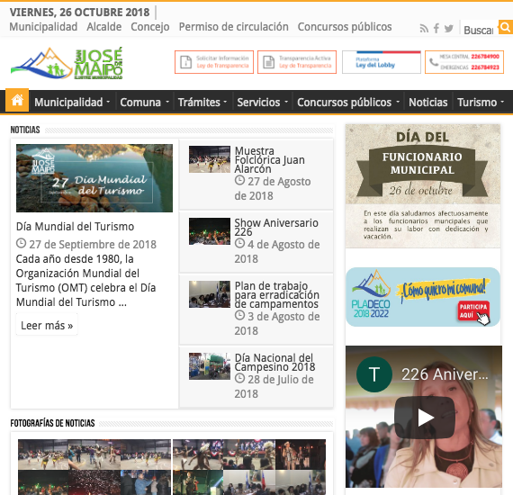
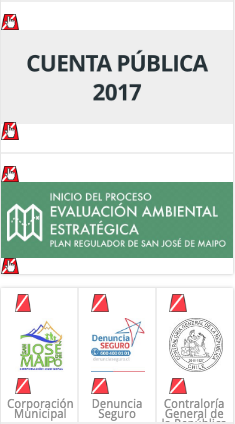
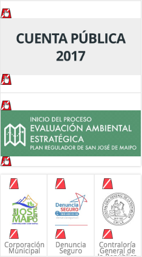
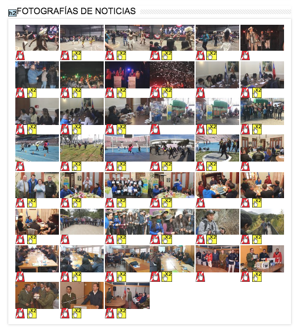
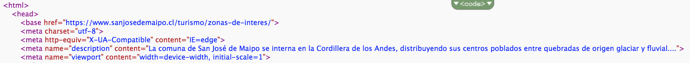
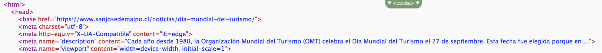

Sitio web de la Ilustre Municipalidad de
San José de Maipo
Evaluación de accesibilidad y SEO
Karen Aballay, Consuelo Ahumada, Camila Benavides, Consuelo de la Maza
Evaluación General
Aspectos Positivos
El sitio web de la municipalidad posee una grilla estándar para todas sus páginas, en la que la sección main-content es la única que varía.
A su buscador le falta cerrar una etiqueta, y en el caso de su logo, este corresponde a dos imágenes que tienen el mismo texto alternativo.
Con respecto al Search Engine Optimization (SEO) el sitio tiene una etiqueta de título bien hecha, de forma explícita y concisa con una longitud de 42 caracteres específicamente. La Meta Description de la página de inicio del sitio, tiene una longitud de 144 caracteres con las palabras claves más relevantes.
Esto es bastante util ya que permite encontrar el sitio con facilidad en Google. El sitio utiliza de forma efectiva solo una etiqueta h1 por página donde se incluyen ciertas palabras claves.
El sitio tiene 93 enclaces de los cuales ninguno de ellos está roto.
La página tiene un archivo robots.txt que impide que éstos accedan páginas determinadas por el sitio, sin embargo este no contiene mapa del sitio XML.
Tiene una página de error 404 personalizada. El sitio tiene una efectiva minimización y compresión de recursos, por lo tanto el tiempo de carga de la página es menor.
Aspectos Negativos
Con respecto a la accesibilidad del sitio en general, este no declara su idioma, y falla mayormente en el texto descriptivo y alternativo de sus imágenes y links (atributo alt).
 

El sitio no presenta una URL canónica y tampoco redirección 301, al no presentar este primer atributo, el sitio entonces tiene contenido duplicado.
La página es responsive, es decir funciona para acceder a través de un celular, tiene meta etiqueta de ventana gráfica bien configurada, pero el contenido no cabe en ella.
Con respecto al caché de recursos, hay 106 recursos no almacenados en caché, por lo tanto el navegador los solicita cada vez que se carga la página.
Es navegable con el teclado en el navegador de Chrome y el de Explorer, pero no en el de Safari
Evaluación por Página
Página de Inicio
Accesibilidad
Hay 70 imagenes en la página principal, sin texto alternativo.
Contraste
Las fechas de los artículos tienen poco contraste con respecto al color de fondo.
Código de color de fondo: #fbfbfb.
Código de color de tipografía: #000000.
Cumple con AA y AAA.

Concejo Municipal
Accesibilidad
Esta página tiene links sin textos alternativos, por lo tanto produce confusión en el lector de pantalla.

Contraste
Muy bajo contraste entre el color de fondo y los breadcrumbs.
Código de color de fondo: #fbfbfb.
Código de color de tipografía: #000000.
Cumple con AA y AAA.
Bajo contraste entre el color de fondo y la sección de municipalidad en el navegador.
Código de color de fondo: #FDAA04.
Código de color de tipografía: #ffffff.
No cumple con los niveles.

Bajo contraste en los links a twitter.
Código de color de fondo: #45B0E3.
Código de color de tipografía: #ffffff.
No cumple con los niveles.

Zona de Interés
Search Engine Optimization
En el código HTML la descripción del meta name tiene más de 160 caracteres.
Contrastes
Bajo contraste entre el color de fondo y los nombres de las zonas de interés.
Código de color de fondo: #ffffff.
Código de color de tipografía: #000000.
Cumple con AA y AAA.

Bajo contraste entre el color de fondo y la sección de turismo en el navegador.
Código de color de fondo: #FDAA04.
Código de color de tipografía: #ffffff.
No cumple con los niveles.
Día Mundial del Turismo
Search Engine Optimization
En el código HTML la descripción del meta name tiene mas de 160 caracteres.
Contraste
Muy bajo contraste entre el color de fondo y los breadcrumbs.
Código de color de fondo: #fbfbfb.
Código de color de tipografía: #000000.
Cumple con AA y AAA.
Bajo contraste entre el color de fondo y la sección de noticias en el navegador.
Código de color de fondo: #FDAA04.
Código de color de tipografía: #ffffff.
No cumple con los niveles.
Bajo contraste entre el color de fondo y los hashtags.
Código de color de fondo: #ffffff.
Código de color de tipografía: #000000.
Cumple con AA y AAA.

Mejoras de Accesibilidad y SEO
Luego de un análisis profundo de estudio, se proponen las siguientes mejoras en accesibilidad y SEO:
- Implementar una URL canónica.
- Implementar una redirección 301 para referenciar las versiones no canónicas de la página a la original.
- Agregar el texto alternativo a las imagenes y asegurarse que la descripción sea única y corresponda al contenido de la imagen.
- Optimizar el tiempo de carga de las imágenes.
- Incorporar un lector de pantalla.
- Mejorar los contrastes para cumplir con los niveles de accesibilidad
Pautas de Accesibilidad para el Contenido Web
- Perceptible
Alternativas textuales (No cumple)
Medios tempodependientes (Si cumple)
Contenido adaptable (Si cumple)
Contenido Distinguible (No cumple) - Operable
Accesible por teclado (No cumple)
Tiempo suficiente (Si cumple)
Convulsiones (Si cumple)
Navegación - Comprensible
Legibilidad (Si cumple)
Predecible (No cumple)
Entrada de datos asistida (Si cumple) - Robusto
Compatibilidad (No cumple)